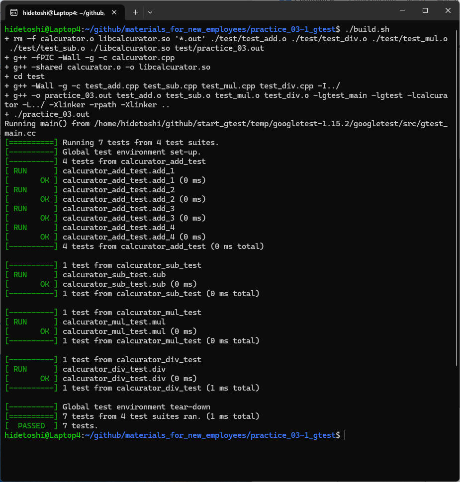
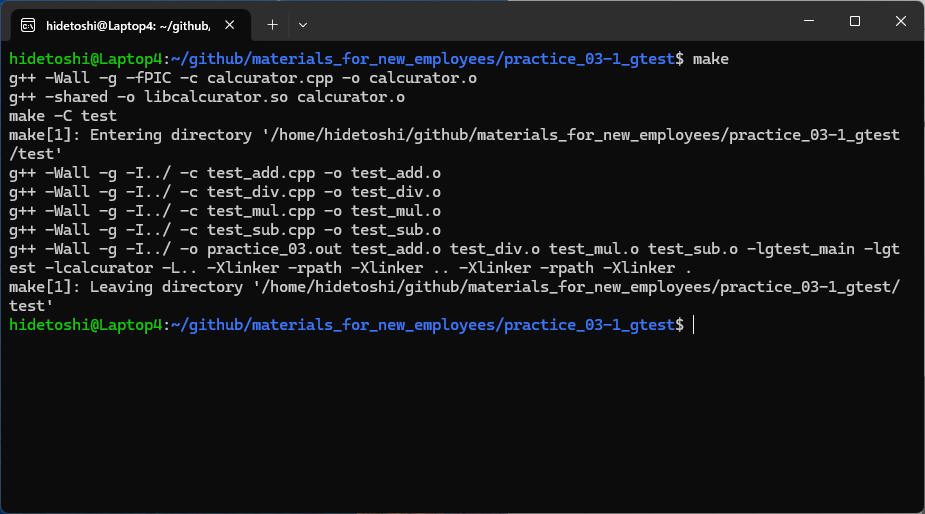

本章では、四則演算（足し算、引き算、掛け算、割り算）を行う関数ライブラリ libcalcurator.so を作成して、これを Google Test
を使って単体テストしてみます。
ファイル構成
./
├ calcurator.h
├ calcurator.cpp
├ build.sh
└ test
├ test_add.cpp
├ test_sub.cpp
├ test_mul.cpp
└ test_div.cpp
ソースコード
"calcurator.h"
namespace calc {
int add(int a, int b);
int sub(int a, int b);
int mul(int a, int b);
int div(int a, int b);
}
"calcurator.cpp"
#include <iostream>
#include "calcurator.h"
namespace calc {
int add(int a, int b){
return a + b;
}
int sub(int a, int b){
return a - b;
}
int mul(int a, int b){
return a * b;
}
int div(int a, int b){
if (b == 0) {
throw std::runtime_error("Division by zero.");
}
return a / b;
}
}
テストコード
"test_add.cpp"
#include <iostream>
#include <gtest/gtest.h>
#include "calcurator.h"
class calcurator_add_test : public ::testing::Test {
protected:
virtual void SetUp() {
}
virtual void TearDown() {
}
};
TEST_F(calcurator_add_test, add_1) {
EXPECT_EQ(calc::add(1, 2), 3);
}
TEST_F(calcurator_add_test, add_2) {
EXPECT_EQ(calc::add(-1, -2), -3);
}
TEST_F(calcurator_add_test, add_3) {
EXPECT_EQ(calc::add(0, 0), 0);
}
TEST_F(calcurator_add_test, add_4) {
EXPECT_EQ(calc::add(1000000, 2000000), 3000000);
}
"test_sub.cpp"
#include <iostream>
#include <gtest/gtest.h>
#include "calcurator.h"
class calcurator_sub_test : public ::testing::Test {
protected:
virtual void SetUp() {
}
virtual void TearDown() {
}
};
TEST_F(calcurator_sub_test, sub) {
EXPECT_EQ(calc::sub(1, 2), -1);
EXPECT_EQ(calc::sub(-1, -2), 1);
EXPECT_EQ(calc::sub(0, 0), 0);
EXPECT_EQ(calc::sub(1000000, 2000000), -1000000);
}
"test_mul.cpp"
#include <iostream>
#include <gtest/gtest.h>
#include "calcurator.h"
class calcurator_mul_test : public ::testing::Test {
protected:
virtual void SetUp() {
}
virtual void TearDown() {
}
};
TEST_F(calcurator_mul_test, mul) {
EXPECT_EQ(calc::mul(1, 2), 2);
EXPECT_EQ(calc::mul(-1, -2), 2);
EXPECT_EQ(calc::mul(0, 0), 0);
EXPECT_EQ(calc::mul(10000, 20000), 200000000);
}
"test_div.cpp"
#include <iostream>
#include <gtest/gtest.h>
#include "calcurator.h"
class calcurator_div_test : public ::testing::Test {
protected:
virtual void SetUp() {
}
virtual void TearDown() {
}
};
TEST_F(calcurator_div_test, div) {
EXPECT_EQ(calc::div(1, 2), 0);
EXPECT_EQ(calc::div(-1, -2), 0);
EXPECT_EQ(calc::div(0, 1), 0);
EXPECT_EQ(calc::div(1000000, 2000000), 0);
EXPECT_THROW(calc::div(1, 0), std::runtime_error);
}
ビルドスクリプト
"build.sh"
#!/bin/bash
# スクリプトの冒頭に set -e を追加すると、エラーが発生した時点でスクリプトの実行を停止します
# スクリプトの冒頭に set -x を追加すると、実行するコマンドを自動的に出力します
set -ex
# 削除
rm -f *.o *.so *.out ./test/*.o ./*.so test/*.out
# libcalcurator.so をビルド
g++ -fPIC -Wall -g -c calcurator.cpp
g++ -shared calcurator.o -o libcalcurator.so
# テストプログラム(unit_test.out) をビルド
cd test
g++ -Wall -g -c test_add.cpp test_sub.cpp test_mul.cpp test_div.cpp -I../
g++ -o unit_test.out test_add.o test_sub.o test_mul.o test_div.o -lcalcurator -lgtest_main -lgtest -L../ -Xlinker -rpath -Xlinker ..
# 実行
./unit_test.out
./build.sh 実行結果

make によるビルド実現方法について記載しておきます。
(例1) １つの makefile によるビルド
ファイル構成
./
├ calcurator.h
├ calcurator.cpp
├ makefile
└ test
├ test_add.cpp
├ test_sub.cpp
├ test_mul.cpp
└ test_div.cpp
makefile
# コンパイラ
CC = g++
# ソースファイルとオブジェクトファイル (ライブラリ)
TARGET = libcalcurator.so
SRCS = calcurator.cpp
OBJS = $(SRCS:.cpp=.o)
# ソースファイルとオブジェクトファイル (テスト用)
TEST_TARGET = unit_test.out
TEST_SRCS = $(addprefix test/, test_add.cpp test_sub.cpp test_mul.cpp test_div.cpp)
TEST_OBJS = $(TEST_SRCS:.cpp=.o)
# コンパイルフラグ
CFLAGS = -Wall -g -fPIC
LDFLAGS = -shared
# テスト用コンパイルフラグ
TEST_CFLAGS = -Wall -g -I./
TEST_LDFLAGS = -lgtest_main -lgtest -lcalcurator -L. -Xlinker -rpath -Xlinker .
# テスト実行ファイルのビルドルール
test/$(TEST_TARGET): $(TEST_OBJS) $(TARGET)
$(CC) $(TEST_CFLAGS) -o $@ $(TEST_OBJS) $(TEST_LDFLAGS)
# 共有ライブラリのビルドルール
$(TARGET): $(OBJS)
$(CC) $(LDFLAGS) -o $@ $^
# オブジェクトファイルのビルドルール
%.o: %.cpp
$(CC) $(CFLAGS) -c $< -o $@
# テスト用オブジェクトファイルのビルドルール
test/%.o: test/%.cpp
$(CC) $(TEST_CFLAGS) -c $< -o $@
# 全ビルド
.PHONY: all
all: clean $(TARGET) test/$(TEST_TARGET)
@echo "Build all targets."
# クリーンアップ
.PHONY: clean
clean:
rm -f $(OBJS) $(TARGET) $(TEST_OBJS) test/$(TEST_TARGET)
@echo "Clean up all targets."
build.sh
#!/bin/bash
# スクリプトの冒頭に set -e を追加すると、エラーが発生した時点でスクリプトの実行を停止します
# スクリプトの冒頭に set -x を追加すると、実行するコマンドを自動的に出力します
set -ex
# 削除
make clean
# ビルド
make
# 実行
./test/unit_test.out
(例2) ２つの makefile によるビルド
makefile を libcalcurator.so 用とテストプログラムを分離する例です。
makefile(1) から makefile(2) を呼んでいます。
ファイル構成
./
├ calcurator.h
├ calcurator.cpp
├ makefile (1)
└ test
├ test_add.cpp
├ test_sub.cpp
├ test_mul.cpp
├ test_div.cpp
└ makefile (2)
makefile (1)
# コンパイラ
CC = g++
# ソースファイルとオブジェクトファイル (ライブラリ)
TARGET = libcalcurator.so
SRCS = calcurator.cpp
OBJS = $(SRCS:.cpp=.o)
# ターゲット
.PHONY: target
target: $(TARGET) test_build
# テスト用のビルド
test_build:
$(MAKE) -C test
# コンパイルフラグ
CFLAGS = -Wall -g -fPIC
LDFLAGS = -shared
# 共有ライブラリのビルドルール
$(TARGET): $(OBJS)
$(CC) $(LDFLAGS) -o $@ $^
# オブジェクトファイルのビルドルール
%.o: %.cpp
$(CC) $(CFLAGS) -c $< -o $@
# 全ビルド
.PHONY: all
all: clean $(TARGET)
@echo "Build all targets."
# クリーンアップ
.PHONY: clean
clean:
rm -f $(OBJS) $(TARGET)
$(MAKE) -C test clean
@echo "Clean up all targets."
makefile (2)
# コンパイラ
CC = g++
# テスト用ターゲット
TEST_TARGET = unit_test.out
TEST_SRCS = $(wildcard *.cpp)
TEST_OBJS = $(TEST_SRCS:.cpp=.o)
LIBCALCURATOR = ../libcalcurator.so
# テスト用コンパイルフラグ
TEST_CFLAGS = -Wall -g -I../
TEST_LDFLAGS = -lgtest_main -lgtest -lcalcurator -L.. -Xlinker -rpath -Xlinker .. -Xlinker -rpath -Xlinker .
# テスト実行ファイルのビルドルール
$(TEST_TARGET): $(TEST_OBJS)
$(CC) $(TEST_CFLAGS) -o $@ $(TEST_OBJS) $(TEST_LDFLAGS)
# テスト用オブジェクトファイルのビルドルール
%.o: %.cpp
$(CC) $(TEST_CFLAGS) -c $< -o $@
# 全ビルド
.PHONY: all
all: clean $(TEST_TARGET)
@echo "Build all test targets."
# クリーンアップ
.PHONY: clean
clean:
rm -f $(TEST_OBJS) $(TEST_TARGET)
@echo "Clean up all test targets."
build.sh
#!/bin/bash
# スクリプトの冒頭に set -e を追加すると、エラーが発生した時点でスクリプトの実行を停止します
# スクリプトの冒頭に set -x を追加すると、実行するコマンドを自動的に出力します
set -ex
# 削除
make clean
# ビルド
make
# 実行
./test/unit_test.out
./build.sh 実行結果

cmake によるビルド実現方法について記載しておきます。
ファイル構成
./
├ calcurator.h
├ calcurator.cpp
├ CMakeLists.txt (1)
└ test
├ test_add.cpp
├ test_sub.cpp
├ test_mul.cpp
├ test_div.cpp
└ CMakeLists.txt (2)
CMakeLists.txt (1)
cmake_minimum_required(VERSION 3.13)
project(calcurator CXX)
# ライブラリ作成
add_library(calcurator SHARED calcurator.cpp)
# ヘッダーファイルのインクルードディレクトリ
target_include_directories(calcurator PUBLIC ${PROJECT_SOURCE_DIR})
# 最適化・警告等のオプション
target_compile_options(calcurator PUBLIC -Wall -g -fPIC)
# testサブディレクトリも追加
add_subdirectory(test)
CMakeLists.txt (2)
# テスト用ソースを自動取得
file(GLOB TEST_SRCS "test_*.cpp")
# テストプログラム作成
add_executable(unit_test.out ${TEST_SRCS})
# ライブラリのリンク
target_link_libraries(unit_test.out PRIVATE calcurator gtest_main gtest)
# インクルードパス
include_directories("${CMAKE_SOURCE_DIR}/..")
# 最適化・警告等のオプション
target_compile_options(unit_test.out PRIVATE -Wall -g)
build.sh
#!/bin/bash
# スクリプトの冒頭に set -e を追加すると、エラーが発生した時点でスクリプトの実行を停止します
# スクリプトの冒頭に set -x を追加すると、実行するコマンドを自動的に出力します
set -ex
# 削除
rm -rf build
# ビルド
mkdir build
cd build
cmake ..
make
# 実行
./test/unit_test.out